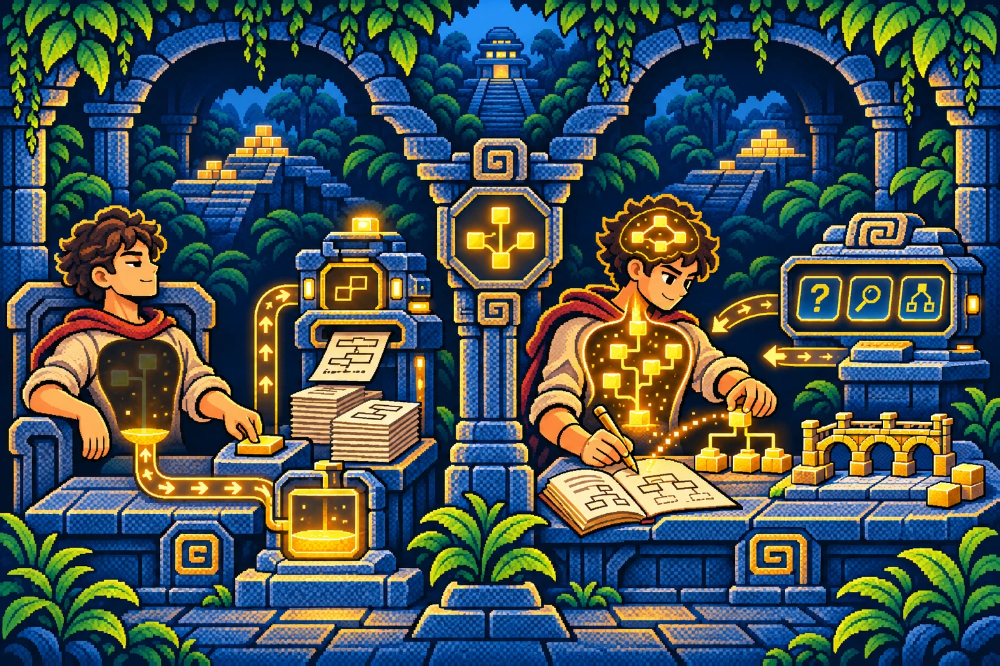

Zer ulertzen duzu?
Aldagaiak, neurriak, grafikoak, banaketak eta kontzeptu estatistikoak.
Sustancia web-joko bat da, emaitza estatistikoak testuinguruan interpretatzen ikasteko: soziologian, psikologian, politika publikoetan, osasunean eta beste arlo batzuetan. Egungo prototipoan, ikasleek beren interpretazioak idatzi eta atzeraelikadura formatiboa jasotzen dute. Hurrengo fasean, hasierako diagnostikoa, dimentsio anitzeko gaitasun-profila eta ikaskuntza-ibilbidera egokitutako jarduerak garatu nahi dira.
Arrazoibide estatistikoa ez da erantzun sinple batetik konplexu batera doan eskailera. Kontzeptuak, eragiketa estatistikoak, interpretazioa, irizpide kritikoa eta norberaren argudioak berrikusteko gaitasuna uztartzen ditu. Sustanciak dimentsio horietan batera nola ikasi aztertzen du.

Estatistika ikastea datuekin pentsatzen ikastea da. Emaitza lortzea ez da nahikoa: haren esanahia ulertu, mugak eztabaidatu eta ikasitakoa beste egoera batzuetara eraman behar da.
IAk erantzun bukatua eman dezake, edo norberak egindako interpretazioa berrikusten lagundu. Sustanciak bigarren bidea proposatzen du: sortu, atzeraelikadura jaso eta berriro pentsatu.

Erantzuna delegatuEmaitza ikaslearengandik kanpo pilatzen da; praktikatzeko aukera murrizten da.
Ikasitakoa barneratuIkasleak sortu, berrikusi eta aplikatzen du; ezagutza bere baitan garatzen da.
Arrazoibide estatistikoa ez da trebetasun bakarra, eta ikaskuntza ez da denontzat ibilbide lineal bera. Kontzeptuak ulertzea, prozedurak erabiltzea, ebidentziak interpretatzea, ziurgabetasuna aztertzea eta argudioak berrikustea eskatzen du.
N1–N4 interpretazioaren sakontasuna deskribatzen duen ardatz bat da, ez ikaskuntza osoaren lau mailako eskailera. Kalkulua zuzena izan daiteke baina interpretazioa ahula; edo interpretazioa zorrotza izan arren prozeduran laguntza behar izatea.
Aldagaiak, neurriak, grafikoak, banaketak eta kontzeptu estatistikoak.
Identifikatu, deskribatu, kalkulatu, alderatu, interpretatu, testuinguruan kokatu, kritikatu eta transferitu.
N1 irakurketa teknikoa; N2 interpretazio estatistikoa; N3 interpretazio substantiboa; N4 irakurketa kritikoa.
Hasierako erantzunak, atzeraelikadurak eta berrikuspenek ikaskuntzari buruzko ebidentzia berria eman dezakete.
Konpara ditzagun interpretazioaren sakontasunaren bi adibide, erregresio-taula ilustratibo berarekin. Ez dute pertsona baten gaitasun osoa neurtzen, ezta nahitaezko N1 → N4 ibilbiderik adierazten ere.
| Aldagai azaltzailea | β | p |
|---|---|---|
| Erabilera konpultsiboa (IDA) | .38 | < .001 |
| Generoa (emakumea) | .24 | .002 |
| Pantaila-denbora | .05 | .41 |
«Erabilera konpultsiboa eta generoa estatistikoki esanguratsuak dira (p < .05). Pantaila-denbora ez da esanguratsua».
«Eredu ilustratibo honetan, erabilera konpultsiboak lotura positiboa du narriadurarekin; pantaila-denboraren koefizienteak, aldiz, ez du esangura estatistikorik lortzen. Horrek pantailak nola erabiltzen diren ikertzera gonbidatzen gaitu, zenbat erabiltzen diren aztertzeaz gain; baina ez du kausalitatea frogatzen».
Zer erakusten du alderaketak? Interpretazioaren sakontasuna, ez pertsonaren maila orokorra. Emaitza ez-esanguratsu batek ez du efekturik eza frogatzen; korrelazioak ez du kausalitatea ezartzen.
Aukeratu lau testuinguruetako bat eta aztertu ikaskuntza-zikloaren bost uneak. Sistemak ondorio bukatua eman beharrean galdera bat itzultzen duenean, erantzuna nola aldatzen den ikus dezakezu.
Udalerri batean, batez besteko diru-sarrera mediana baino askoz handiagoa da. Zer esan nahi du horrek?
Adibide hipotetikoak dira; ez dira benetako elkarrizketak, eta ez dute eraginkortasuna frogatzen. Ikasleak sortzen du erantzuna, ez IAk.
Proposatutako eredu egokitzaileak hasierako diagnostikoa, gaitasun-profila, curriculumari lotutako jarduerak eta berrikuspen gidatuaren zikloa uztartzen ditu. Ikasleak ez du dokumenturik igo behar: talde akademikoak aukeratu eta berrikusten ditu iturriak eta ariketak.
Prototipoaren lehen datu-multzoa unibertsitateko lehen mailako ikasleen habitus teknologikoari eta osasun mentalari buruzko ikerketa enpiriko batetik dator (n = 276). Orain, proposamena beste diziplina batzuetako estatistika-materialetara zabaltzen ari da.
Proiektuaren osagai guztiak ez daude une berean erabilgarri. Etiketek erakusten dute zer dagoen gaur egun eta zer dagoen oraindik diseinuan.
Interpretazio-jarduerak eta hasierako ebaluazio formatiboa. Jokoaren interfazea gaztelaniaz dago.
Akatsen sailkapena, N1–N4 eta oinarri teorikoa.
Hasierako diagnostikoa eta ebidentzietan oinarritutako dimentsio anitzeko profila.
Elkarrizketa errekurtsiboak, jardueren hautaketa eta irakasleentzako panelak.